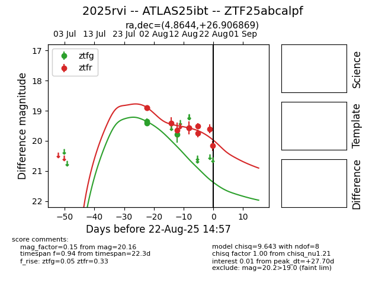

Target 2025rvi at 2025-08-22 14:57, see:
FINK: fink-portal.org/ZTF25abcalpf
Lasair: lasair-ztf.lsst.ac.uk/objects/ZTF25abcalpf
ALeRCE: alerce.online/object/ZTF25abcalpf
TNS: wis-tns.org/object/2025rvi
YSE: ziggy.ucolick.org/yse/transient_detail/2025rvi
alt names
ZTF25abcalpf (ztf,alerce)
2025rvi (tns,yse)
ATLAS25ibt (atlas)
coordinates:
equatorial (ra, dec) = (4.8644,+26.90687)
galactic (l, b) = (114.1775,-35.42066)
photometry
last ztfg=19.78, ztfr=20.16
3 ztfg, 10 ztfr detections
